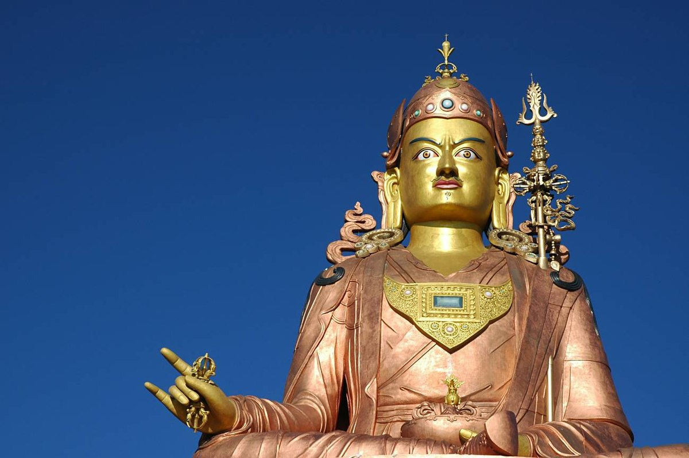

HISTORY

The Lepchas are considered to be the earliest inhabitants of Sikkim.
However the Limbus and the Magars also lived in the inaccessible parts of West and
South districts as early as the Lepchas perhaps lived in the East and North districts.
The Buddhist saint Padmasambhava, also known as Guru Rinpoche,
is said to have passed through the land in the 8th century.
The Guru is reported to have blessed the land, introduced Buddhism,
and foretold the era of monarchy that would arrive in Sikkim centuries later.